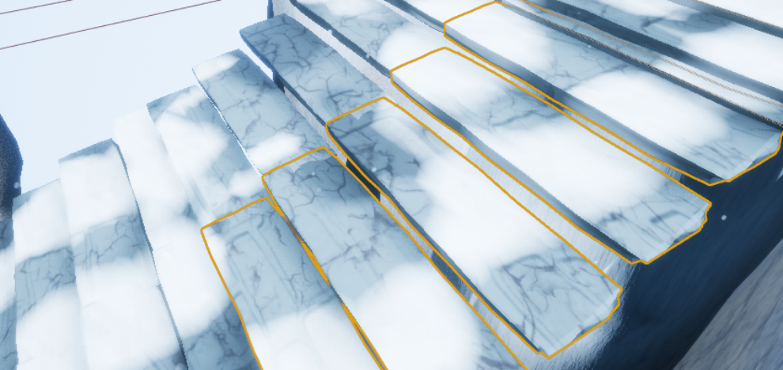

Technical Art
Vertex Paint Master Material
In Fenrir Unchained, I wanted to tackle the ability to use modular assets and be able to use them anywhere so they all line up with the texture perfectly, and not feel
like its all the same thing being repeated. One of the catches to this, is that I also wanted the ability to scale up the modular asset, and still have them be tiling perfectly. The first step was to figure out the texture tiling.

As you can see with the gif above, I managed to do this by utilizing a world aligned material approach to be able to tile objects seamlessly. Because the material was world aligned, it could be scaled
way up, and it would still tile without stretching. This would later be helpful to be able to made differently sized rock meshes and be able to stack them together to create unique shapes for a rock wall.
The next step in the process was to figure out how to make things seem varied enough while not putting too much more effort onto the artists to create a lot of unique textures for each asset, thus requiring a new material instance for it.
So instead, I decided to use vertex colors as a way to make things more varied. I used Unreal Engine 4's ability to paint vertex colors on meshes in engine to do this process. I took the modular wall mesh and subdivided it to give me enough
vertices to give me more precise control over what I was going to paint. Then I modified the material the wall was using to do a height lerp in between two types of textures and their respective normal maps. Since the style of the game was
a snowy environment, I had a tileable snow texture and normal map to lerp between. To increase the amount of variation even more, I utilized two more vertex color channels to give some color stains on the bricks and give the snow a bit of a blue-ish tint on edges.

The master material itself ended up being quite large in terms of wires and nodes connected to different places everywhere, but it allowed for a lot of variation in the modular assets that I was looking for. And as I said before I was even able to parameterize the
texture sampler nodes that were used in the original so they were reusable and could used with different textures in different places as needed. As you can see below, it was also used for this staircase for the ability to add snow and discolor the stones.
